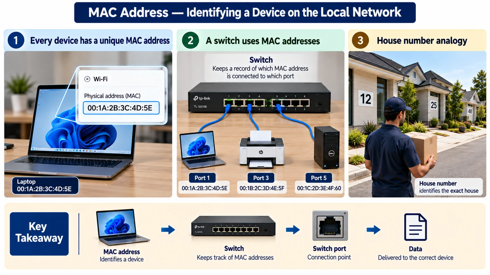
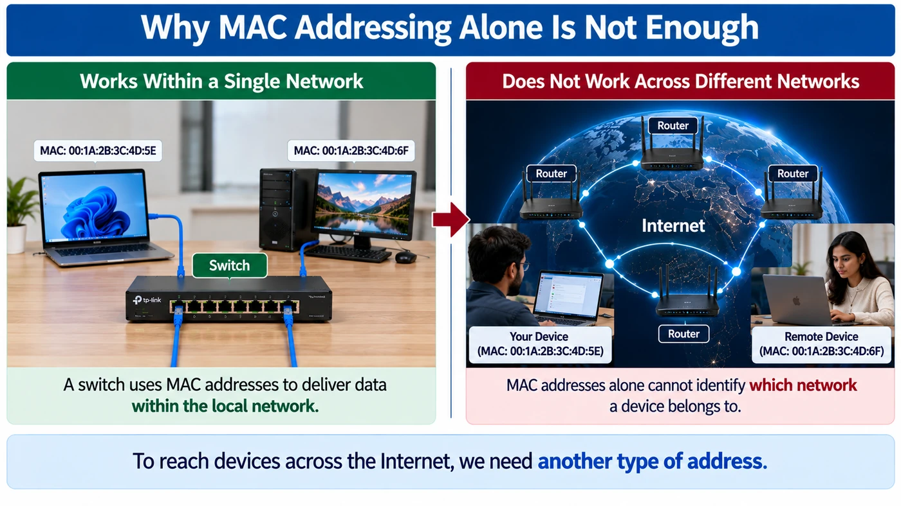
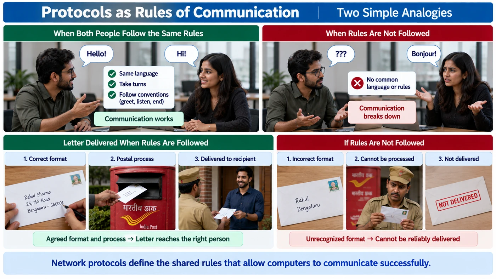
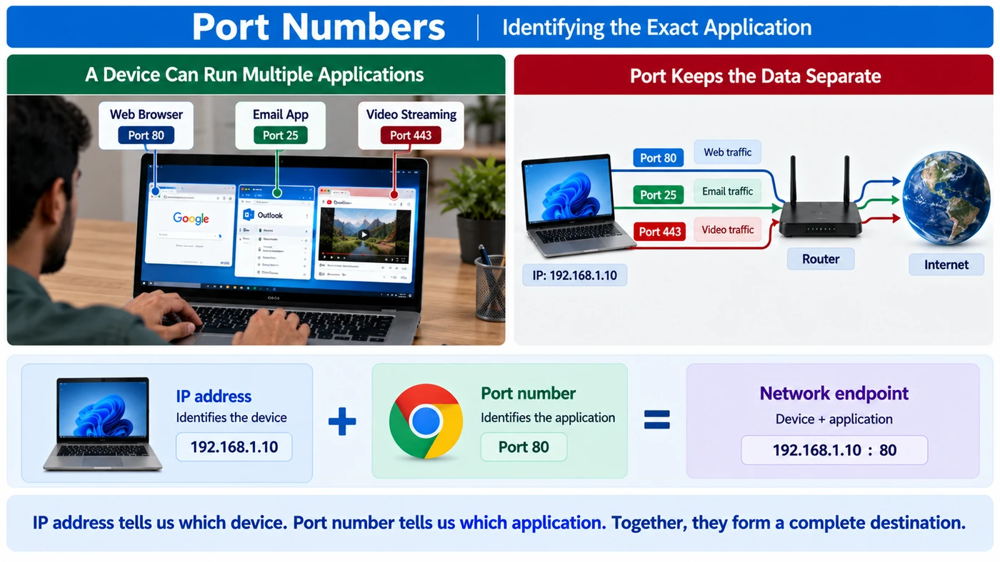
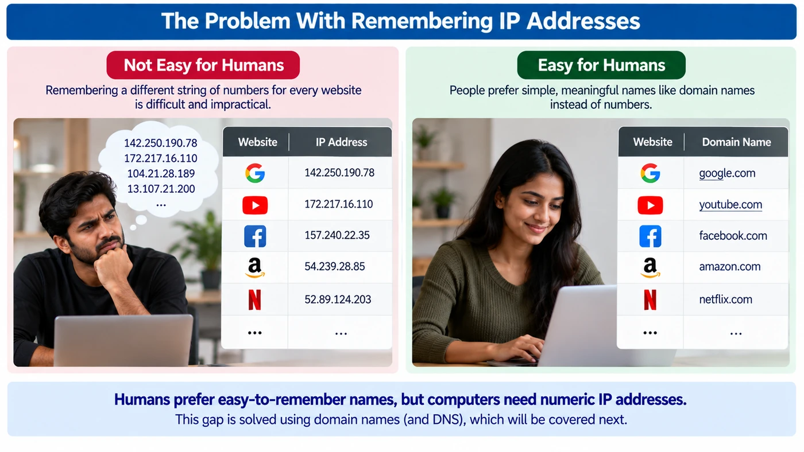
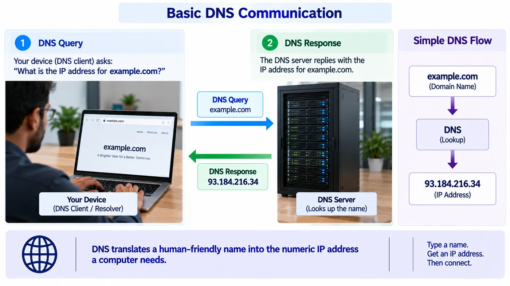
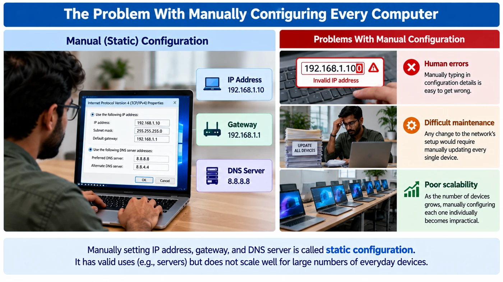
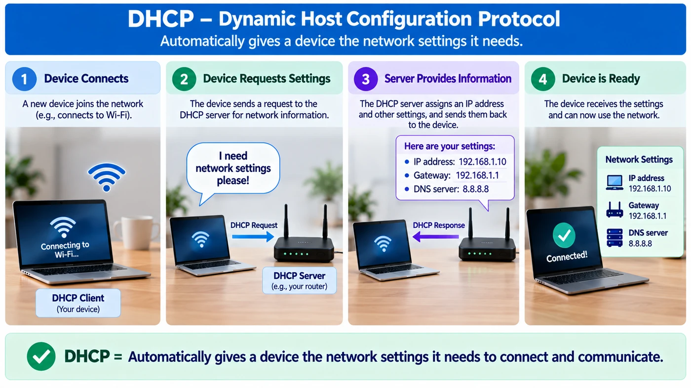
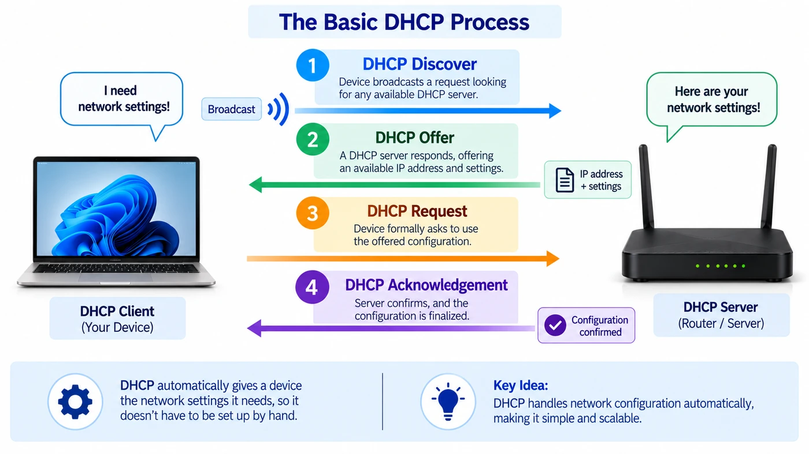

Networking Fundamentals II: Device Identification & Core Protocols
Why every device needs an address
In the last note a switch sent data “only to PC C”, using a MAC address, and a router forwarded data using a “network-layer address”. Both terms were used but not explained. This note fills that gap, one problem at a time:
MAC address: identifying a device on the local network
Every network interface (the NIC from the last note) has a unique identifier called a MAC address (Media Access Control). It is given to the hardware when it is manufactured, so it normally stays the same even when the device joins a different network.
It is written as six pairs of hexadecimal digits (0–9, A–F), which is 48 bits in total:
First half: identifies the manufacturer of the network card (the OUI, Organizationally Unique Identifier).
Second half: a number the manufacturer gives this one particular card.

A switch keeps a record of which MAC address is connected to which port. When data must reach a particular device, it checks this record and sends the data through the correct port.
MAC address
Identifies one specific network interface.
Switch
Remembers where each MAC address is connected.
Switch port
The socket where the device is plugged in.
Data
Leaves through the correct port to the intended device.
In short: a MAC address helps a switch identify and reach the correct device on the local network.
Why MAC addresses alone are not enough
MACs work brilliantly inside one local network, where a switch can track every device. But the Internet is millions of networks. A MAC address says nothing about which network a device is on, so a router somewhere in Delhi has no way to know where 00:1A:2B:3C:4D:5E lives.

What’s needed is an address that identifies the device and the network it belongs to, so routers can move data step by step toward the right network.
IP address: identifying a device across networks
That address is the IP address. Unlike a MAC address, it is a logical address: it is given to the device based on the network it is currently connected to, and it can change when the device moves to another network. Routers use IP addresses to decide where data should go between networks.
![IP address infographic: MAC is the house number 25, IP is the complete location 25, MG Road, Bengaluru; key difference MAC is permanent (belongs to hardware), IP can change (based on network); routers use IP addresses to move data between networks, your device 192.168.1.10 on a local network and a remote device 203.0.113.25 on a different network; formats IPv4 192.168.1.10 and IPv6 2001:0db8:85a3:0000:0000:8a2e:0370:7334; public IP reachable from the Internet, private IP used inside the local network](img/04.webp)
The house number identifies the particular house, just as a MAC address identifies a specific device on a local network. But someone sending a parcel from another city also needs the street and city. In the same way, an IP address identifies both the device and the network it currently lives on, so routers can move data from network to network until it reaches the right one, and eventually the right device.
A MAC address belongs to the network hardware, like the number fixed on the house. An IP address belongs to the device’s current network connection, like its current full postal address. Connect to a different network and the IP can change.
Switch delivers locally, router delivers between networks
Two versions of IP
IPv4
Four numbers (0–255) separated by dots, 32 bits in total, e.g. 192.168.1.10. Older and still everywhere.
IPv6
A longer, 128-bit format written in hexadecimal groups, e.g. 2001:db8::1. Created to provide vastly more addresses than IPv4.
Each of the four parts of an IPv4 address is one byte (8 bits), so it ranges from 0 to 255.
Public and private
Public IP
Reachable from the Internet.
Private IP
Used inside your local network, not directly reachable from the outside Internet. 192.168.x.x at home is a typical example.
IPv4 structure, subnetting, CIDR, public vs private in depth, and IPv6 are covered in the next notes. For now remember why IP exists: MAC identifies a device locally; IP identifies the device and its network, so data can travel between networks.
Bonus: how IP and MAC meet (ARP)
Here’s a gap worth closing. Your laptop knows the IP it wants to reach (say the printer at 192.168.1.20), but the switch delivers by MAC. How does the laptop learn the printer’s MAC? With ARP, the Address Resolution Protocol: it shouts a question to everyone on the local network, and only the owner answers.
Peek at your own ARP cache
ip neigh # Linux
arp -a # Windows / macOSProtocols: shared rules for talking
Knowing where to send data doesn’t mean the receiver can understand it. Two computers from different manufacturers, running different software, can only communicate if both follow the same format and rules.
Crucially, a protocol is not tied to any brand. If two devices follow the same protocol, they understand each other, whoever built them.

Human conversation
Same language, take turns, greet before starting, say goodbye before ending. Ignore these and the conversation breaks down, even between two capable speakers. A protocol is this shared “language and etiquette”, for computers.
Postal system
An agreed way to write an address on the envelope, use stamps, and move the letter. Write the address in a format the post office doesn’t recognise and it can’t be delivered.
Common protocols and their jobs
Different jobs need different rules, just like a phone call, a letter and a face-to-face chat follow different etiquette. Each protocol solves one piece of the puzzle:
| Protocol | Basic purpose | Covered in depth |
|---|---|---|
| Ethernet | How data is formatted and delivered within a local network, using MAC addresses | OSI note (Layer 2) |
| IP | Logical addressing, and how data finds its way across networks | IP addressing notes |
| TCP | Reliable, in-order delivery between two applications | TCP & UDP module |
| UDP | Lighter, faster delivery with no guarantee | TCP & UDP module |
| DNS | Translates names like example.com into IP addresses | This note, then DNS module |
| DHCP | Automatically gives a new device its IP address and settings | This note |
| HTTP | Requests and delivers web pages between browser and web server | HTTP/HTTPS module |
| HTTPS | HTTP with the communication encrypted | HTTP/HTTPS module |
| ICMP | Diagnostic messages, e.g. checking whether a device is reachable (used by ping) | Troubleshooting module |
Local delivery
Ethernet
Across networks
IP, ICMP
Getting it there well
TCP, UDP
Specific tasks
DNS (naming), DHCP (setup), HTTP/HTTPS (web)
Ports: reaching the right application
Your laptop runs a browser, an email client and a chat app at the same time, all over one network connection. The IP address gets data to the device, but which app is it for?
If data simply arrived at the right device with no further detail, the device couldn’t tell whether it belonged to the browser, the email client or the chat app. Ports let many applications use the network at the same time without their data getting mixed up.

Put together, the IP address + port form a network endpoint: the exact device and the exact application.
IP address: which device on the network.
Port: which application or service on that device.
Well-known ports
Certain ports are so consistently tied to certain services that they have become effectively standard:
:8000 won’t be reachable if only 443 is allowed.TCP and UDP: two ways to deliver
Reaching the right device and port isn’t always enough; often the data must also arrive complete and in order. Two transport protocols make different trade-offs:
TCP · Transmission Control Protocol
Guarantees reliable, ordered delivery between two applications. Used for web pages, email and file transfers, where missing data would cause real problems.
UDP · User Datagram Protocol
Lightweight: no connection set-up, no guarantee of arrival, order or correctness. Used for live video/voice calls and online gaming, where a tiny gap beats a pause.
| Aspect | TCP | UDP |
|---|---|---|
| Reliability | Guarantees delivery and order | No guarantee of delivery or order |
| Overhead | Higher, due to reliability mechanisms | Lower: simpler and faster |
| Typical use | Web browsing, email, file transfer | Live video/voice calls, online gaming |
How TCP achieves reliability (the three-way handshake, sequence numbers, acknowledgements) is saved for the TCP & UDP module. What matters now: both solve the same basic problem, getting data from one application to another, but they make different trade-offs between reliability and speed.
DNS: names instead of numbers
IP addresses suit computers, not people. Nobody wants to memorise a different string of numbers for every website. People remember domain names like example.com or google.com.

Your device acts as a DNS client (also called a resolver) and sends a DNS query: “What is the IP address for this name?” A DNS server, which stores or knows how to find these mappings, sends back a DNS response with the IP address.

Try it
nslookup example.com # ask DNS for the IP of a nameDNS has more details, such as different record types, how lookups are cached, and how to troubleshoot DNS problems. Those come in the dedicated DNS module; the idea to keep now is simply DNS’s role: translating a human-friendly name into the numeric IP address a computer needs.
DHCP: automatic network setup
To take part in a network, a device needs an IP address, its default gateway (the router, from the last note) and a DNS server address. Typing these into every device by hand causes problems:
Human errors
One wrong digit and the device can’t talk.
Hard maintenance
Any network change means re-editing every device.
Poor scalability
Hundreds of laptops and phones? Impossible by hand.

Setting these values manually is called static configuration. It still has its place, for example a server that must always keep the same address, but it doesn’t scale for everyday clients.
DHCP (Dynamic Host Configuration Protocol) automatically gives a device the network settings it needs. The device asking is the DHCP client; the computer or network box answering (often your home router) is the DHCP server. That’s why your phone just works within seconds on a new Wi-Fi.

The four steps (remember “DORA”)
This is a fundamental, high-level view of the process; fuller detail comes later wherever more advanced material needs it.

- DDiscoverThe device broadcasts a request looking for any available DHCP server.
- OOfferA DHCP server responds, offering an available IP address and settings.
- RRequestThe device formally asks to use the offered configuration.
- AAcknowledgementThe server confirms, and the configuration is finalised. (The address is leased for a period, then renewed.)
169.254, it asked for DHCP and nobody answered, so it gave itself a fallback address. Check the cable, the Wi-Fi, or the DHCP server.The chain of problems, solved
Each idea in this note fixed the gap the previous one left behind:
- 1Which device, locally?MAC address, used by switches. → house number
- 2Which device, across networks?IP address, used by routers. → full postal address
- 3Can they understand each other?Protocols: shared rules for format, order and behaviour.
- 4Which app on the device?Ports; IP + port = endpoint. TCP or UDP decide how carefully it’s delivered.
- 5Humans can’t remember numbersDNS turns names into IP addresses.
- 6Nobody wants to configure by handDHCP hands out IP, gateway and DNS automatically.
Every one of these topics (MAC/IP addressing, protocols, TCP/UDP, DNS) gets its own dedicated module later in the course.
With so many separate responsibilities in sending even one message (addressing it, formatting it, delivering it locally, routing it globally, and making sure the right application receives it), how does it all stay organised instead of becoming one giant, tangled process? That is exactly what the OSI model answers next.
Key terms
- MAC address
- A 48-bit hardware identifier assigned to a network interface at manufacture, written as six pairs of hex digits; switches use it to deliver within a local network.
- IP address
- A logical address given to a device based on the network it is connected to; it identifies both the device and its network, so routers can move data between networks.
- IPv4 / IPv6
- IPv4 addresses are 32-bit, written as four dotted numbers (192.168.1.10); IPv6 addresses are 128-bit, written in hex, created to provide far more addresses.
- Public / private IP
- A public IP is reachable from the Internet; a private IP is used inside a local network and is not directly reachable from outside.
- ARP
- Address Resolution Protocol: a device broadcasts “who has this IP?” on the local network and the owner replies with its MAC address.
- Protocol
- An agreed set of rules for communication: data format, message order and behaviour, independent of any manufacturer.
- Port
- A number that identifies a specific application or service on a device, e.g. 443 for HTTPS.
- Network endpoint
- The combination of an IP address and a port, e.g. 203.0.113.10:443, naming the exact device and application.
- TCP
- Transmission Control Protocol: a transport protocol that guarantees reliable, in-order delivery between applications.
- UDP
- User Datagram Protocol: a lightweight transport protocol that sends data without setting up a connection or guaranteeing delivery or order.
- DNS
- Domain Name System: translates human-friendly domain names into IP addresses through queries and responses between a DNS client and a DNS server.
- DHCP
- Dynamic Host Configuration Protocol: automatically gives devices an IP address, gateway and DNS server through Discover, Offer, Request and Acknowledgement.
- Static configuration
- Manually setting a device’s IP address, gateway and DNS server; useful for servers that must keep a fixed address.
Self-check
Pick an answer. You’ll see right away whether it’s correct and why.
Your laptop moves from home Wi-Fi to office Wi-Fi. What normally changes?
- Its MAC address
- Its IP address
- Both
- Neither
The IP belongs to the current network connection, so it changes. The MAC belongs to the hardware and normally stays the same.
Why can’t routers on the Internet forward data using only MAC addresses?
- MAC addresses are too long
- MAC addresses are secret
- A MAC address says nothing about which network the device is on
- Routers have no ports
Routers need to know which network to head for. An IP address carries that network information; a MAC does not.
Two computers from different manufacturers exchange data successfully. What made that possible?
- Both follow the same protocol
- Both have the same MAC address
- Both run the same brand of OS
- Both are on port 80
Protocols are brand-independent rules. If both sides follow them, they understand each other.
A server runs SSH and an HTTPS website on the same IP address. How does incoming data reach the right service?
- By the MAC address
- By DHCP
- By DNS
- By the port number: 22 vs 443
The IP finds the server; the port finds the application on it.
Which is the better fit for a live video call?
- TCP, because every frame must arrive
- UDP, because speed matters more than a tiny lost piece
- DNS
- DHCP
Pausing to resend old video would cause stutter. UDP keeps the call flowing.
What does DNS do when you type example.com?
- Assigns your laptop an IP address
- Encrypts the page
- Returns the IP address for that name
- Picks the port
DNS translates names into IP addresses. Assigning your own IP is DHCP’s job.
What is the correct order of DHCP messages?
- Discover, Offer, Request, Acknowledgement
- Request, Offer, Discover, Acknowledgement
- Offer, Discover, Acknowledgement, Request
- Discover, Request, Offer, Acknowledgement
DORA: the client discovers, the server offers, the client requests, the server acknowledges.
Your laptop knows the printer’s IP (192.168.1.20) but needs its MAC to send a frame. What does it use?
- DNS
- DHCP
- ICMP
- ARP
ARP broadcasts “who has 192.168.1.20?” and the printer replies with its MAC.
All of it, in one sentence
A MAC finds a device locally, an IP finds it across networks, protocols make sure both sides understand each other, a port picks the app, TCP/UDP choose between reliable and fast, DNS turns names into IPs, and DHCP sets all of it up automatically.
— Vishwa Mohan